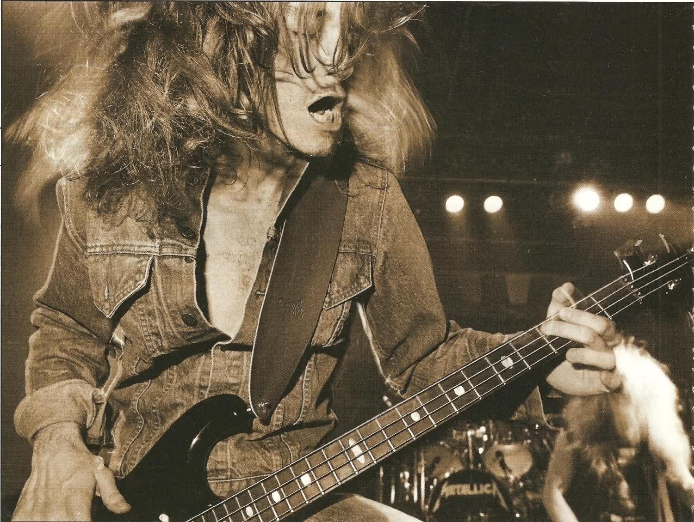

Clifford Lee Burton
The bassist who left to soon...

Cliff performing with Metallica on 1986
Some information about his career
- Born in California 1962.
- In 1982 he joined Trauma.
- One day at the Whiskey A-Go-Go nightclub, after an amazing performance with Trauma, James Hetfield (Vocals and Rythm guitar of Metallica) and Lars Ulrich (Drummer Metallica) astonished by the performance, asked Burton to join the their upcoming band as a bass player.
- Not convinced at all about joining both future friends, he propose to join them if the band would move to San Francisco. His wish was accepted and the band Metallica was formed
- 1983 Metallica released their first album Kill 'Em All that featured Cliff Burton's bass solo as one of the songs.
- In 1984 Metallica's second album was released with 8 total songs, where 6 of those 8 where written by Cliff Burton.
- Metallica popularity exploded in 1986.
That involved the signing of the band with Elektra
discography, and release in the same year the album
Master of Puppets. The album was one of the huge
hits of Metallic,a including the best songs of Burton:
Orion and
Master of Puppets . - Clifford Lee Burton died on tour of the Master of Puppets Tour, in 1986, on the european country of Sweeden.
- In 1988, after two years of Metallica's pain, they came out with their fourth album ...And Justice For All, where in that album the last piece of Cliff Burton's maestry appeared. With the song To Live Is To Die, a song composed by the already dead musician, and played as a tribute by their best friends.